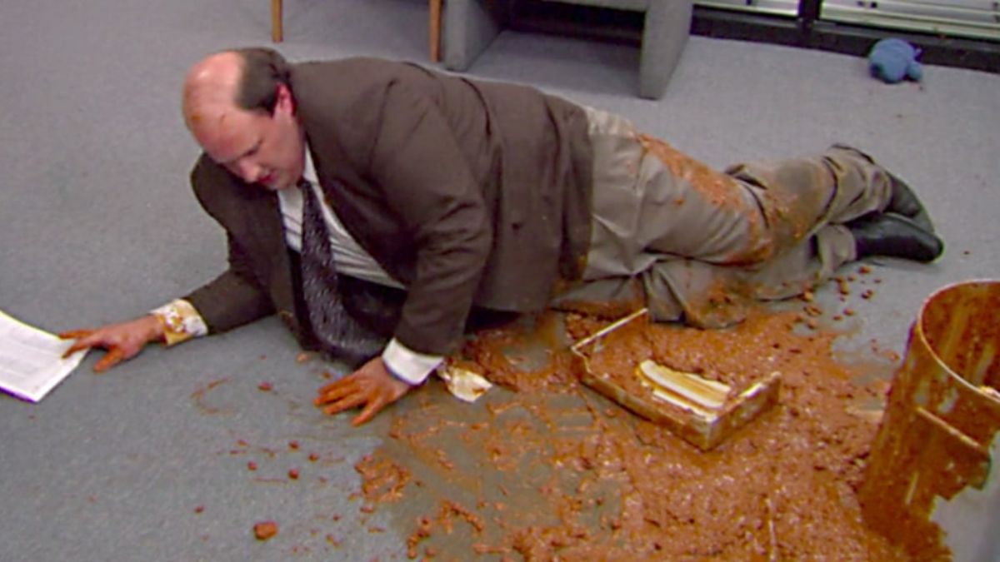

Kevin's Famous Chili

Kevin's famous chili with the secret ingredient: Kevin
This bad boy (and I don't mean the pot) is Kevin, mixed in with
his Kevin's famous chilly. With a little bit of love and
a little bit of luck you can find Kevin to top off your Chili.
Ingredients
- ground beef
- Kevin, from The Office
- paprika, cumin, cocoa powder, thyme, brown sugar, chiles,
- olive oil
- diced onion
- diced jalepeno
- cream corn
- kidney beans
- tomato chopped
- light beer
Steps
- In a food processor, grind up all the seasonsings and chiles
- Add the olive oil and saute the vegetables until they are shimmery and soft
- Add the Kidney beans, and cream corn. Season with salt and pepper to taste.
- Poor in the beer and bring to a simmer. Then add the raw ground beef.
- Reduce the heat to medium and occasionally stir for a total of six hours.
- Finally ready to serve with your choosing of cheese and green onions.
- Pour the Chili over Kevin if he is willing, eat the chili with preferably chips off of Kevin.